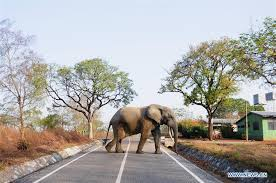
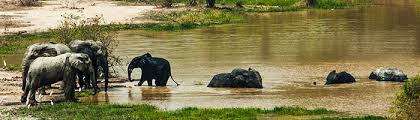
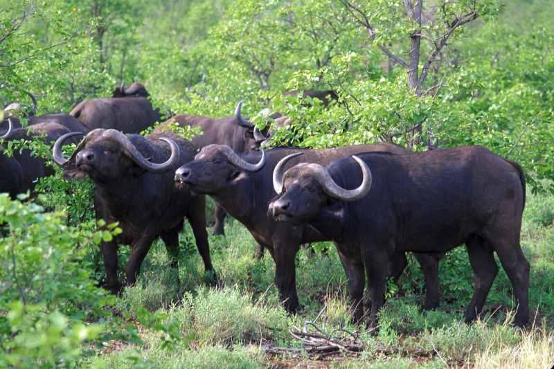
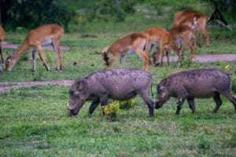
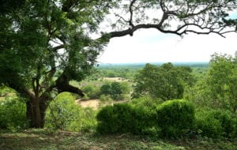
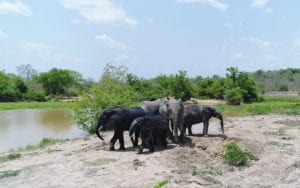
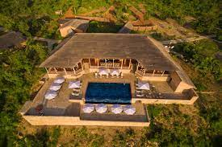
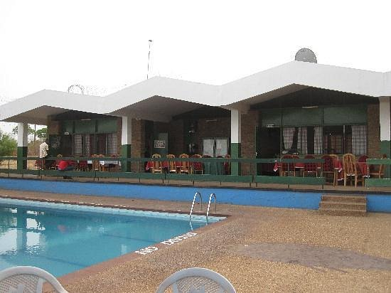

Do You Know
Mole National Park is the largest and most prestigious protected area in Ghana, in the north-west of the country, is Ghana’s largest wildlife refuge, measuring 4,849 sq km. The park has very rich flora and fauna. It is best known for its elephants (a population of about 600) as well as many other primates.
Wildlife
Some 94 mammal species, over 300 bird species, 9 amphibian species and 33 reptile species have been recorded in Mole. The large and commonly seen mammals include elephant, kob, roan antelope, hartebeest, waterbuck, bushbuck, warthog, buffalo, several duikers, baboon, roan, kob, hartebeest, waterbuck. Predators include lion, leopard, spotted hyena, caracal, aardvark, genet, civet and mongoose. Occasionally, buffalo overrun the park headquarters and the lodge area. Birds The large bird life includes kites and Bateleur eagles, rollers, kingfishers, Egyptian geese, egrets, pelicans and storks. Ground hornbills, flycatchers, malachite kingfishers, guinea fowls and rock partridges occur in large numbers at Mole. There are also more than 300 bird species and 33 identified reptile species within the national park. The park is located on grassland savannah and its entrance is near the town of Larabanga. The ephemeral rivers Lovi and Mole flow through the park, leaving behind drinking holes in the long dry season.




History
The Mole national park was established in 1958 and re-designated a National Park in 1971. It covers an area of 4,840sq km of undulating terrain with steep scarps. The vegetation is pristine Guinea savanna with gallery forests along the rivers and streams. Mole National Park was the first Wildlife Protected Area to be established in Ghana. The Park lies within two physiographic regions – 65% lies within the Voltaian sandstones basin and 35% within the savannah high plains. The topography is generally undulating with flat topped hills which is dominated by the Konkori scarp that runs north-south through the park and reaches up to 250m. The Park forms part of the Volta River catchment and numerous rivers cross or originate in it to drain into the White Volta River. Mole National Park represents a fairly undisturbed guinea Savannah ecosystem dominated by open savannah woodland. Species of special interest include Elephant, Buffalo, Kob, Western Hartebeest, Roan Antelope, Defassa Waterbuck, Oribi, Bohor Reedbuck and Red-flanked Duiker. The riverine forests are home to rare and endangered species such as Yellow-backed Duiker and Black and White Colobus monkey. The Lion, Leopard and Hyena are important large carnivores found in the reserve. The baffalo population is of great scientific interest since both black and red colour varieties exist in the Dark. With regards to vegetation, local endemism is generally low in West African Savannah, and only two endemic species Kyllinga echinata, a sedge and Ancilema setiferum var pallidiciliatum confined to northern Ghana, are found in Mole. In addition, three species endemic to Ghana are recorded, namely Gongronema obscurum, Raphionacme vignei and Phinopterys angustifolia. Eleven (11) species of mole are confined to the savannah woodland while Mimusops kammel, a tree that is confined to riverine forests.
More
To date, five species have been identified whch have not been recorded elsewhere in Ghana Croton pseudopulchellus, Indigofera conferta, Indigoera trichopoda, Jatropha neriifolia and Pleiotaxis newtonii. Anthocleista vogelii, a tree of wet sites in the south-western forest zone of Ghana has been recorded for the first time in Mole. Apodostigma palleus is a climber that is also restricted to the forests in the south-west Ghana. Amblygono carpas andogeneiss, a savannah tree widespread in central, east and south tropical Africa, has been recorded for the first time in Ghana at Mole. Mole has an important history linked to the national slave trade route project. The ancient caravan route from Salaga to Wa and beyond to Mali, passed through the heart of the park. This route was used for both trading and to transport slaves to coastal markets. The park Headquarters is located right at a place where two famous slave raiders (Samore and Babatu) raided and erased a village to the ground. The Head quarters is named after one of them – Samole. There is a cave in the Konkori escarpment that was used as a refuge from slave raiders by the local indigines. Other important attractions in the Park include Kwomwoghlugu and Asibey pools, wetland areas (unique bird-watching sites), waterfalls on the Koukori escarpments and remains of many old villages destroyed by slave raiders.


Choose your accommodations

